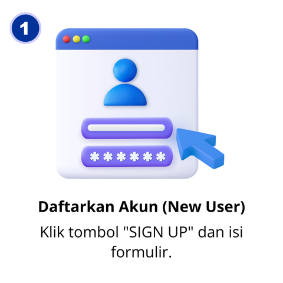
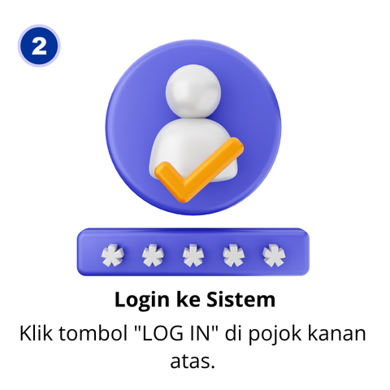
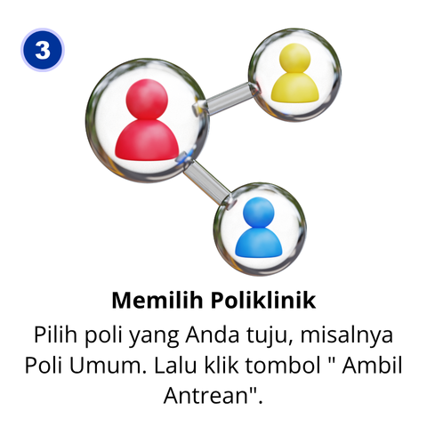
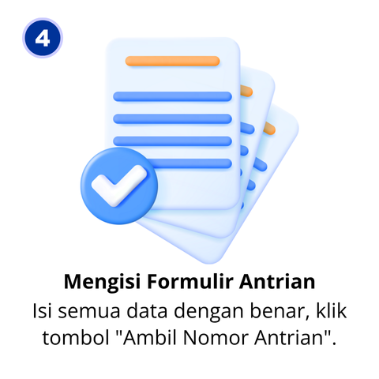
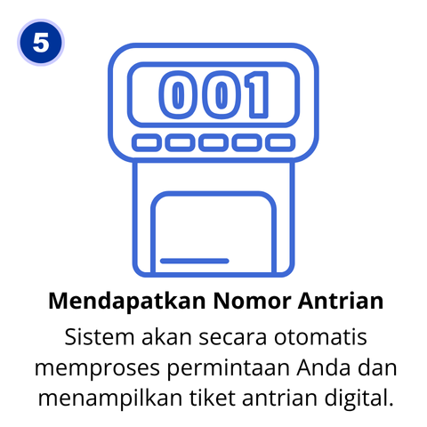
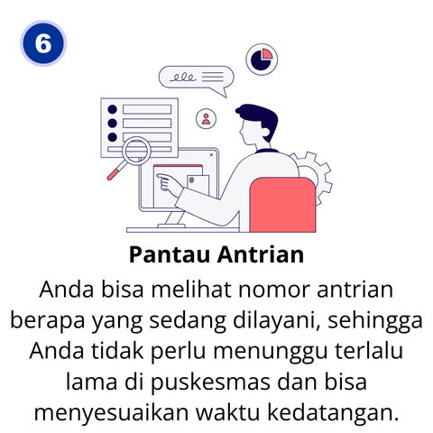

"Jujur, saya paling malas ke poli gigi karena antriannya selalu panjang. Sejak ada AntriCare, saya bisa mendaftar dari rumah dan tahu kapan harus datang. Waktu tunggu jadi singkat, rasa cemas pun berkurang."
Jennie Kim - Pasien Poli Gigi"Sebagai entertainer, waktu sangat berharga. Dulu harus izin setengah hari hanya untuk periksa demam. Dengan AntriCare, saya bisa daftar online, datang sesuai perkiraan jam, dan langsung dilayani. Sangat efisien!"
Kim Taehyung - Pasien Poli Umum"Konsultasi gizi jadi lebih mudah diakses dan tidak terasa membuang waktu. Saya bisa mengatur jadwal kunjungan rutin saya di sela-sela kesibukan tanpa khawatir antrian yang tidak menentu. Sangat praktis!"
Ningning Yizhuo - Pasien Poli Gizi"Untuk konsultasi KB, privasi dan kenyamanan itu penting. AntriCare membuat prosesnya jadi lebih cepat dan teratur. Saya bisa datang sesuai jadwal tanpa harus menunggu lama dan berdesakan dengan pasien lain."
Zhang Linghe - Pasien Poli KB"Membawa balita untuk imunisasi jadi lebih nyaman. Tidak perlu lagi menunggu berjam-jam di ruang tunggu yang ramai. Cukup daftar lewat AntriCare, datang saat giliran sudah dekat. Benar-benar membantu para ibu."
Hermione Granger - Pasien Poli KIA"Mengantar orang tua untuk kontrol rutin jadi jauh lebih mudah. Tidak perlu lagi lelah menunggu. Dengan sistem online ini, kami bisa dapat kepastian jadwal, sehingga orang tua saya bisa beristirahat di rumah dulu."
Robert Pattinson - Pasien Poli Lansia